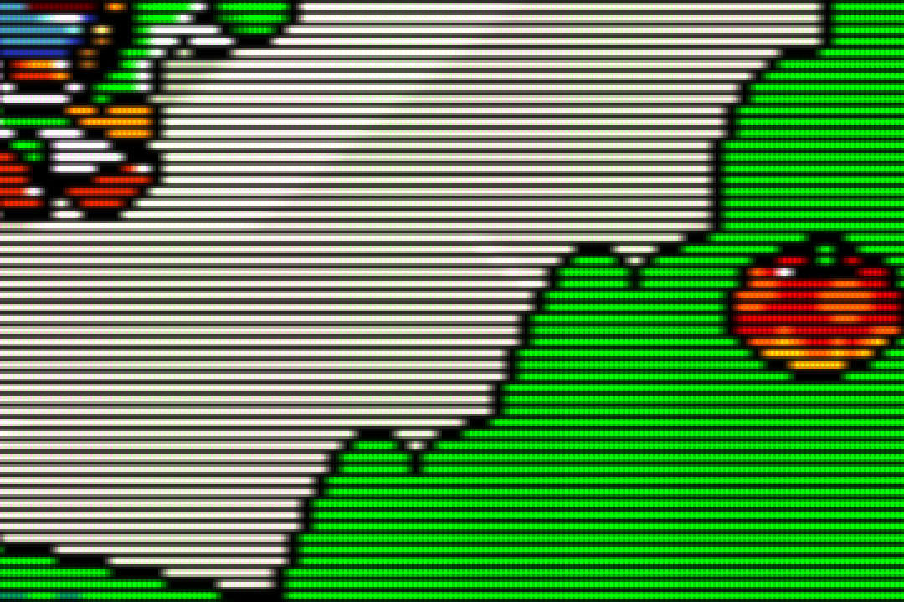
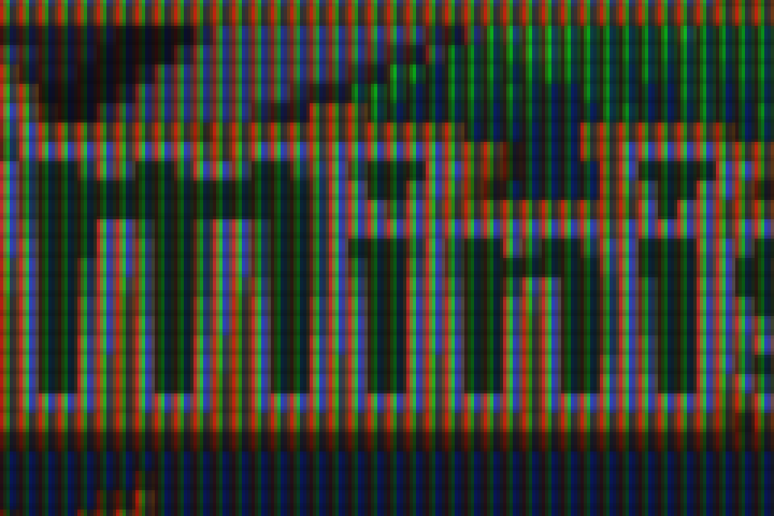
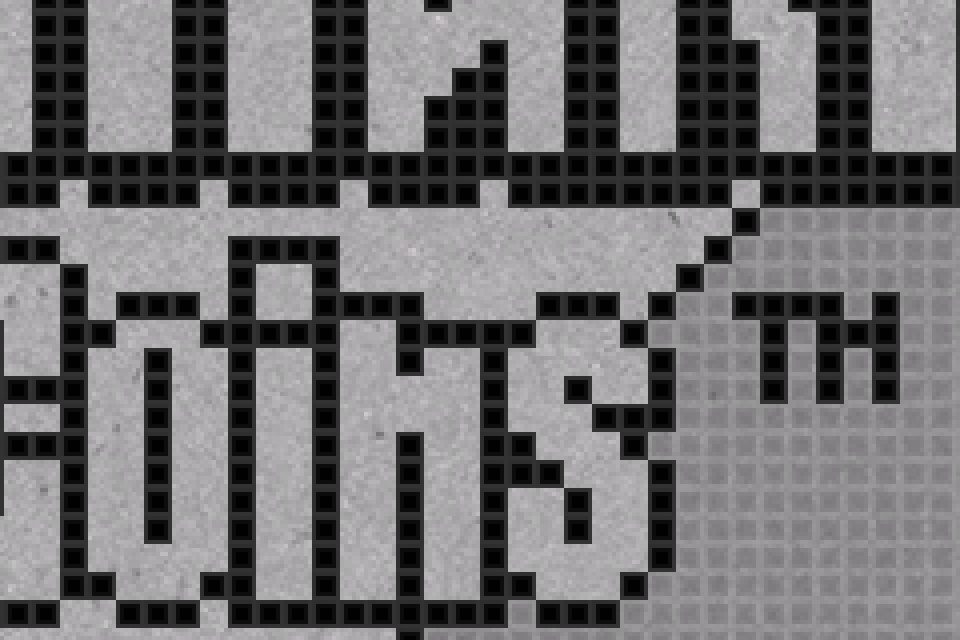

Shaders
On a flat TV, consoles get a Trinitron-style CRT shader and handhelds get their own LCD look. Every shader was measured on this Pi at 1080p; only ones that hold 60 fps made the cut.
The picks
| Systems | HDMI TV (trinitron-hdmi) | Trinitron (trinitron-crt) |
|---|---|---|
| NES, SNES, Mega Drive, PS1, PC Engine, arcade and other consoles | crt/trinitron: crt-pi with its vertical-stripe aperture-grille mask, horizontal-only curvature (Trinitron tubes are cylindrical), brighter mask | None. The tube draws the real thing. |
| Game Boy | handheld/simpletex_lcd: paper-textured LCD with the grid on dark pixels, like the non-backlit DMG | None. Gambatte's green DMG palette. |
| Game Boy Color | handheld/simpletex_lcd+gbc-color: same texture plus GBC color correction | handheld/gbc-color |
| GBA | handheld/agb001: endrift's (mGBA author) recreation of the original GBA screen with RGB subpixels | handheld/gba-color |
| Game Gear, Neo Geo Pocket, WonderSwan, Lynx | handheld/zfast-lcd (Batocera's pick, not benchmarked) | None |
| Virtual Boy, DS, 3DS, PSP, Dreamcast | None | None |
Video settings that go with them: integer scaling on (even scanlines and LCD grids), smoothing off, bezels off, aspect ratio auto (each system's real shape: 4:3 for consoles, 10:9 GB, 3:2 GBA).


agb001 on GBA: RGB subpixels per pixel.
simpletex_lcd on Game Boy (grey here; real launches use the green palette).How Batocera applies them
- A shader set is a folder with
rendering-defaults.yml, mapping systems to shaders;default:covers every system not listed. User sets live in/userdata/shaders/configs/<name>/and are chosen withglobal.shaderset=<name>. - A shader named
crt/trinitronis looked up as/userdata/shaders/crt/trinitron.glslpfirst, then in Batocera's own folder. On the Pi 4 the video driver isgl, so.glslppresets are used. - The custom presets reference Batocera's shader code by absolute path and only override its parameters.
trinitron.glslp:CURVATURE_X 0.08,CURVATURE_Y 0.0,MASK_BRIGHTNESS 0.80,SCANLINE_WEIGHT 6.0,SCANLINE_GAP_BRIGHTNESS 0.15,BLOOM_FACTOR 1.5.trinitron-flat.glslpis the same without curvature.
How they were measured
tools/shader_bench.sh runs RetroArch on the TV twice per shader, a short run of 120 frames and a long one of 120 + LONG frames, with vsync on and audio sync off. fps = LONG / (long time − short time) cancels out loading and shader compile time. RetroArch's --max-frames-ss saves a GPU screenshot (after the shader) for checking the look.
S=/usr/share/batocera/shaders/crt
/tmp/shader_bench.sh snes9x "/userdata/roms/snes/Super Mario World (USA).sfc" /tmp/bench/snes none $S/crt-pi.glslp
LONG=2400 EXTRA_CFG=/tmp/bench-int.cfg /tmp/shader_bench.sh mgba <gba rom> /tmp/bench/gba none ...- Full speed means within about ±0.7 fps of the no-shader baseline, which itself reads 59.1–60.7 at 60 Hz.
- Vsync-off "uncapped" numbers are useless here: the Wayland compositor still paces frames (no-shader SNES came out at only 87).
- Handheld runs need
EXTRA_CFGwith integer scaling,aspect_ratio_index = "22"and viewport bias 0.5. The benchmark reuses the config of the last game launched from the menu, and a bezel game leaves a custom 4:3 viewport pinned top-left. - Nobody should play during a run: a game played in parallel produced a bogus 55 fps.
tools/verify_launch.sh then launches games through Batocera's real launcher, captures the screen with grim and prints the shader and settings RetroArch actually got.
CRT shader results (SNES, 1080p)
| Shader | fps | Verdict |
|---|---|---|
| none (baseline) | 59.7–59.9 | — |
crt-pi | 59.8–60.2 | Full speed |
trinitron (custom) | 59.1–59.6 | Full speed chosen |
zfast-crt | 59.4–60.1 | Full speed |
fakelottes | 57.8 | Drops frames |
crt-yo6-KV-M1420B-fast | 56.9 | Drops frames |
crt-geom-mini | 47.9 | Too slow |
crt-gdv-mini | 31.4 | Too slow |
crt-easymode | 27.4 | Too slow |
crt-lottes-fast | 20.9 | Too slow |
crt-guest-dr-venom-fast | 15.1 | Too slow |
crt-yo6-KV-M1420B (a real Trinitron model) | 14.0 | Too slow |
crt-consumer | 14.0 | Too slow |
crt-yo6-KV-M1420B-sharp | 13.5 | Too slow |
crt-aperture | 11.8 | Too slow |
With integer scaling, the Trinitron preset held 59.6 (SNES, 1196×896), 60.2 (NES), 59.6 (Mega Drive) and 59.5–60.0 (PS1, 1280×960; baseline 60.0).
Handheld shader results (integer scaling: GBA 6×, GB/GBC 7×)
| Shader | GBA | GBC | GB | Verdict |
|---|---|---|---|---|
| none (baseline) | 59.1–60.3 | 60.0–60.7 | 60.1–60.5 | — |
agb001 | 58.5–59.7 | Full speed GBA pick | ||
gba-color | 58.5–60.0 | Full speed color only | ||
simpletex_lcd+gba-color | 54.8–58.3 | Drops frames | ||
ags001 | 54.2 | Drops frames | ||
zfast-lcd | 55.8–57.3 | 59.4–60.4 | 60.3–61.2 | GB/GBC only |
simpletex_lcd+gbc-color | 60.5–61.0 | Full speed GBC pick | ||
simpletex_lcd | 59.5–60.3 | Full speed GB pick | ||
sameboy-lcd | 40.0 | Too slow | ||
gb-dot-matrix-DMG | 24.6 | Too slow | ||
lcd-grid-v2 (all variants) | 16.3–16.4 | 16.7 | 19.2 | Too slow |
gameboy, gameboy-pocket | 16.8–17.1 | Too slow |